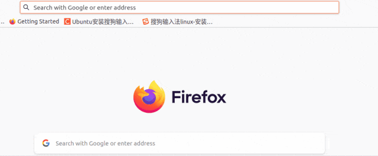

HaoTian · 2024-10-11 13:06:06
随着安全等级的提升，原来通过 http 协议访问的网站都要更改为 https 协议，改造完成后，通常也不大可能要求网站使用者在访问网站时手动写入 https，为了提高用户体验，系统后台默默承担了将 http 请求自动重定向到 https 的任务。本篇将介绍如何在 nginx 添加相关配置以实现 http 到 https 的重定向。
HTTP 到 HTTPS 的重定向是指当用户尝试通过 HTTP（非加密）访问网站时，服务器会自动将其请求重定向到 HTTPS（加密）版本的相同 URL。这不仅增强了网站的安全性，还提高了用户的信任度。
在 nginx 中，可以通过配置 server 块来实现 http 到 https 的重定向。通常有两种方式实现这一目的，下面逐一介绍。
在 nginx 的配置文件中，添加一个 server 块，监听 80 端口（http 默认端口），并使用 return 301 指令进行重定向，以下是配置示例：
server {
listen 80;
server_name localhost;
return 301 https://$host$request_uri;
}
说明，return 301 https://$host$request_uri; 该指令执行 301 永久重定向，将用户请求的 URL 转换为 HTTPS 版本。$host 变量表示请求中的主机名，$request_uri 变量则包含请求的完整 URI（包括查询参数）。
保存配置后重启或重新加载 nginx，以使更改生效。
在 Nginx 中，除了使用 return 指令来实现 HTTP 到 HTTPS 的重定向外，还可以使用 rewrite 指令来达到相同的目的，配置如下：
server {
listen 80;
server_name localhost;
rewrite ^ https://$host$request_uri permanent;
}
说明，rewrite ^ https://$host$request\_uri permanent; 该指令执行重定向操作：
^: 表示匹配所有请求的 URI。
https://$host$request_uri: 构建重定向的目标 URL，其中 $host 变量代表请求中的主机名，$request_uri 变量包含请求的完整 URI（包括查询参数）。
permanent: 指定这是一个永久重定向（301），告知浏览器和搜索引擎应更新其链接。
当用户通过 HTTP 访问网站时，Nginx 会匹配到该 server 块，并执行 rewrite 指令。Nginx 将请求的 URI 进行重写，构建出 HTTPS 的 URL，并返回一个 301 永久重定向响应。浏览器接收到这个响应后，会自动重定向到 HTTPS 版本的 URL。
虽然 rewrite 指令可以实现 HTTP 到 HTTPS 的重定向，但在大多数情况下，使用 return 指令更为简单和高效。return 指令直接返回响应，处理速度更快，而 rewrite 指令会在内部进行更复杂的处理。因此，对于简单的重定向，推荐使用 return 指令。
在浏览器中输入 HTTP 版本的 URL，这里只输入 IP，检查是否成功重定向到 https 版本，从下图可以看出是能够跳转的。
